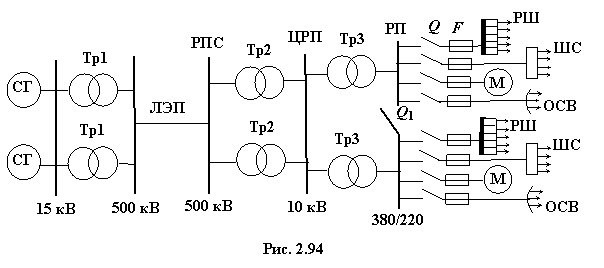

В электрических сетях высокого напряжения (свыше 1000 В), как правило, применяются трёхфазные сети с заземлённой нейтральной точкой источника питания, что обеспечивает быстрое отключение источника от сети при авариях. В качестве примера на рис. 2.94 изображена типовая схема электроснабжения (передача и распределение электрической энергии) от электростанции к электроприёмникам.

На электростанциях установлены синхронные генераторы CГ, вырабатывающие электроэнергию при напряжении 10(6), 15 или 35 кВ. Трансформаторы Тр1 повышают напряжение до 110, 220, 330, 500, 750 и 1150 кВ (500 кВ на рис. 2.94), при котором электроэнергия передаётся по линии электропередачи (ЛЭП) на большие расстояния и поступает на районные распределительные подстанции (РПС). От районной РПС электрическая энергия поступает на понижающие трансформаторы Тр2 центрального распределительного пункта (ЦРП) крупного предприятия, преобразующие напряжение до 10(6), 15 кВ, и далее по кабелям на цеховые распределительные пункты (РП), где трансформаторы Тр3 понижают напряжение до 380/220 В, реже до 660 В. В РП, помимо трансформаторов Тр3, устанавливают разъединители Q и предохранители F. Вторичные обмотки трансформаторов подключают к шинам низкого напряжения (380 или 660 В).
Согласно «Правилам устройства электроустановок» в промышленных предприятиях должны применяться четырёхпроводные схемы с заземлёнными нейтральными точками вторичных обмоток трансформаторов Тр3
с обязательным защитным заземлением или занулением корпусов электроустановок. Такая схема обеспечивает два напряжения (линейное и фазное) для питания приёмников и независимую работу фаз при симметричной и несимметричной нагрузках, а также быстрое срабатывание защитных устройств в аварийных режимах.
Распределение энергии в цехах предприятий производится, как правило, на низком напряжении (до 1000 В). Линии, отходящие от шин низкого напряжения распределительного пункта РП, поступают непосредственно к мощным потребителям М (мощные электродвигатели, электрические печи и др.), к распределительным шкафам РШ, где установлены рубильники и предохранители, или шинным сборкам ШС, от которых питаются станки и другие потребители. Кроме того, от отдельной линии питается осветительная сеть ОСВ. Возможны и другие варианты схем электроснабжения.